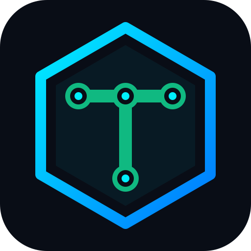

Tradvia
Preview
Architecture
Integrations
Roadmap
Live runs
EN
PT
ES
GitHub
Open-Core AgentOps & Hybrid Execution Control Plane
Early stage · building in public
View on GitHub
Get early access
/ $120
security@tradvia.org